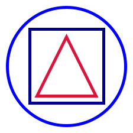

Shapes
Concept
Constructing simple geometric shapes is provided by the Shape algebra. All the methods on the algebra are constructors, so typically you'd access them by calling methods on the Picture object. Here's an example.
import doodle.core._
import doodle.java2d._
import doodle.syntax.all._
val basicShapes =
Picture
.circle(200)
.strokeColor(Color.blue)
.on(Picture.square(125).strokeColor(Color.darkBlue))
.on(Picture.triangle(100, 100).strokeColor(Color.crimson))
.strokeWidth(5.0)This program gives the output below.

Here is a short description of all the methods provided by Shape.
emptycreates the empty picture that takes up no space and renders nothing. Useful for that sweet monoid identity and for the base case in recursions.square(sideLength)creates a square with the given side length.rectangle(width, height)creates a rectangle with the given width and height.circle(diameter)creates a circle with the given diameter. Specified in terms of diameter rather than radius so thatsquare(100)andcircle(100)take up the same space.triangle(width, height)creates an isoceles triangle with the given width and height.
Implementation
These methods are available on both the Shape algebra and Image.